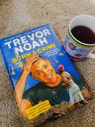

Trevoh Noah used hyperbole to present the fact of his birth in a humorous way
He continues saying that when her mother's delivery was taking place
the doctors cut open her belly,and reached in and pulled out a half white half black child
page(26)The tone of Trevor Noah implies that the doctors are not concerned about
the humanity of his mother or child.but actually a child cannot be born half black or half white
Trevor Noah used humor when he could take his girlfriend to the party for the funny thing when
his girlfriend refusing to come out from the car,trying to convince people who were
able to speak the same language to his girlfriend but it was funny for the young boy
everyone was laughing at her.
Noah discussing his comedy career in this memories,his writing itself show how
humor can not put person in pain but also help people to maintain a
sense of realistic,resilience in the face of obstacle
he share a sense of humor with his mother during sunday
since they argued through jokes mostly about whether
jesus really want them to go to church but for Noah this was much
a way of emphasizing that the benefit of devotion are psychologically
about ability to change people perspective,their regardless of whether
they pray from home or church.he wanted to make his other to laugh
and to expose his stress.there is also part of humor where trevor noah
like convincing some mother to get opportunity him hang around at their home
as he manage to book a date for their daughter and exchanging
with money when his best friend Teddy got arrested after stealing
from the shop,noah manage to run.eventually police come to school with
the video to display what had happened.Trevor noah was called back to
the office to be ask if there were with his friend but he say not I don't know
but when the police was showing the video Trevoh say in his mind”
can you not see that me!Are you people blind.Another humor in the novel is
where Trevoh noah had shit inside the dustbin and trying pretending that
all his well acting being innocent.her grandmother told her to pray
since his prays was so power,he lead the pray for cursing out the demon
but he was pretending to not what was going on.
Trevoh was so close to his mother that they had
a conversation with him in the letter about the performance in the school
but he was rude to his mother ,there he said that why will I be good at school and yet I inherited from you?''
It sounded funny.They was humor from the part when he was beaten by the principal
he started laughing, making the principal get angry and asking his mother to go
and check if her son needed a psychologist.for Trevor Noah being beaten, referring to him like a man.